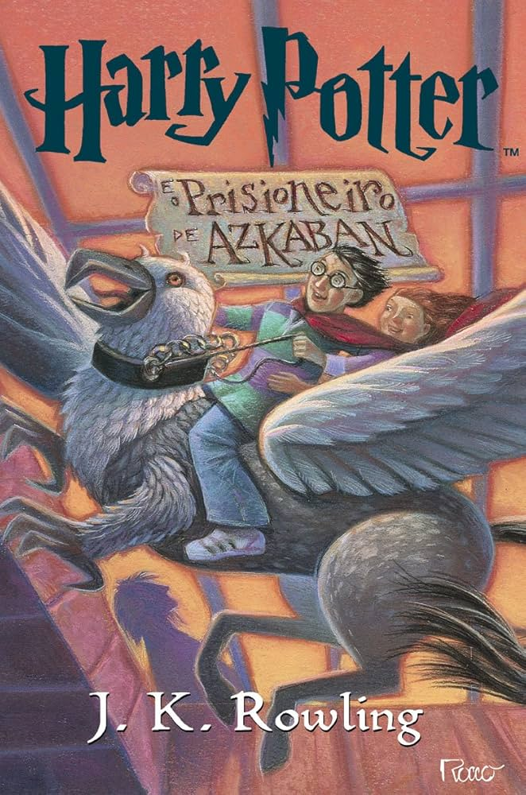

Harry Potter: O Prisioneiro de Azkaban

Uma história mais sombria e madura, que aprofunda os personagens e suas relações, trazendo mais emoção e complexidade. As conexões entre passado e presente revelam verdades importantes e mudam a forma de enxergar tudo. Com reviravoltas marcantes, novos personagens cativantes e momentos mais leves, o livro equilibra mistério, desenvolvimento e diversão, sendo um dos mais queridos da saga.
Corte de Espinhos e Rosas

O primeiro livro de ACOTAR funciona bem como introdução, com um início envolvente que apresenta Prythian e mistura romance com fantasia. A leitura é fluida e prende bastante, mas a parte “Sob a Montanha” poderia ser mais bem desenvolvida, com algumas decisões e resoluções previsíveis. Feyre se destaca pela coragem, enquanto Tamlin acaba sendo mais passivo do que o esperado. No geral, é uma história que entretém e cumpre seu papel inicial, mesmo prometendo mais do que entrega.